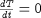
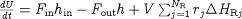

When developing very detailed models, it is often better to start with a simple model and gradually add more complexity. This is because initialising the fully-detailed model may be too difficult without good initial guesses. With a much simpler model, one can obtain a solution from a poor initial guess and then use that as the initial guess for a more detailed model. This process is repeated until the final model, with the desired level of detail, can be solved.
gPROMS Initialisation Procedures enable the modeller to automate this process and are much more flexible and reusable than manually initialising a complex model. This is because using the manual approach requires that published models contain the saved variable set that is necessary to initialise the simulation. Apart from making the published model large in size (due to the size of the saved variable set), the saved variable set will be suitable for only a narrow range of problems: for example, if the model user wanted to change the number of chemical species in the simulation, then the existing saved variable set may be useless and it would be impossible to initialise the simulation. This might also happen even if only a few species were changed (the number of components remaining the same). Initialisation Procedures allow complex models to be initialised successfully without the use of saved variable sets and for a very much wider range of problems.
To see how the initialisation procedures are defined, consider again the energy balance equation for a lumped CSTR model:
One way to build up to the full energy balance from simplified ones would be to start with an isothermal model, then switch to an adiabatic model and finally to arrive at the full non-isothermal, non-adiabatic model (the equation above).
The problem would then first be initialised using

for the energy balance.
The solution of this would then be used as the initial guess to solve the next initialisation, using

for the energy balance. Finally, the solution of the last problem would be used to initialise the model with the desired energy balance:
(Of course, this example is quite simple and it is probably not necessary to go to these lengths in this case. However, much more complicated models would require this treatment.)
This initialisation procedure can be defined in gPROMS first by specifying all of the equations within a CASE statement and then using the Initialisation Procedure to SWITCH from the simplified equation(s) to the final one(s). All of the following must be specified in the Model.
First the Selector Variable must be defined:
SELECTOR EnergyMode AS (Isothermal, Adiabatic, NINA) DEFAULT NINA
Then the equations can be defined using a CASE statement:
EQUATION
...
CASE EnergyMode OF
WHEN Isothermal:
$T = 0 ;
WHEN Adiabatic:
$U = F_in*h_in - F_out*h + V*SIGMA(rate()*DeltaH_R()) ;
WHEN NINA:
$U = F_in*h_in - F_out*h + V*SIGMA(rate()*DeltaH_R()) + Q ;
END
...
Finally, the initialisation procedure is defined by:
INITIALISATION_PROCEDURE IP_SimpleEnergyBalance
START
EnergyMode := Isothermal ;
END
NEXT
MOVE_TO
EnergyMode := Adiabatic ;
END
END
NEXT
MOVE_TO
EnergyMode := NINA ;
END
END
END